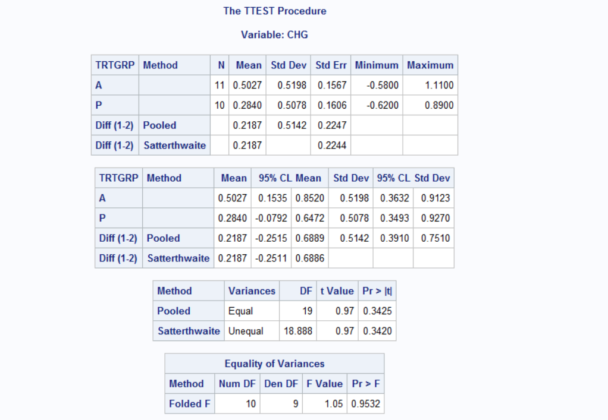

Chapter 2 Introduction
2.1 Discrete Distributions
The binomial distribution is, perhaps, the most commonly used discrete distribution in clinical biostatistics.
Other commonly used discrete distributions include the poisson and the hypergeometric distributions.
Figure 2.1: Here is a nice figure!
2.2 Continuous Distributions
If a random variable can take any value within an interval or continuum, it is called a continuous random variable.
Continuous distributions are most conveniently approximated by functions of the random variableX, such as PX:
PX = 2 * x for (0 < x < 1)
The normal probability distribution is the most commonly used continuous distribution in clinical research statistics.
Many naturally occurring phenomena follow the normal distribution, which can be explained by a powerful result from probability theory known as Central Limit Theorem
The Central Limit Theorem states that, regardless of the distribution of measurements, sums and averages of a large number of like measurements tend to follow the normal distribution.
Other common continuous distributions are the exponential distribution, the chi-square distribution, the F-distribution, and the Student t-distribution.
2.3 One-Sample t-Test
The one-sample t-test is used to infer whether an unknown population mean diffs from a hypothesized value. The test is based on a simple of “n” measurements from the population.
The t-distribution is symmetric and bell-shaped, like the normal distribution, but has heavier tails, meaning that it is more prone to producing values that fall far from its mean.
The main difference between the Z-test and the t-test is that the Z-statistic is based on a known standard deviation, while the t-statistic uses the sample standard deviation as an estimate of sigma.
A sample of n data points, y1, y2, …, yn is randomly selected from a normally distributed population with unknown mean, mu. This mean is estimated by the sample mean, y hat. You hypothesize the mean to be some value, mu zero. The greater the deviation between y hat and mu zero, the greater the evidence that the hypothesis is untrue.
The test statistic is a function of this deviation, standardized by the standard error of y hat, namely s / sqrt(n).
2.3.1 SAS example
according to history data, the BMI was 28.4. A new study collects some data below and wants to know if the BMI from this sample is consistent with previous findings.
data bmi;
input patno wt_kg ht_cm;
bmi=wt_kg / ((ht_cm / 100) ** 2);
cards;
1 101.7 178
2 97.1 170
3 114.2 191
4 101.9 179
5 93.1 182
6 108.1 177
7 85.0 184
8 89.1 182
9 95.8 179
10 97.8 183
11 78.7 .
12 77.5 172
13 102.8 183
14 81.1 169
15 102.1 177
16 112.1 180
17 89.7 184
;
run;
proc ttest h0=28.4 data=bmi;
var bmi;
run;
/* test for normality can be carried in SAS using normal option in proc univariate*/
proc univariate normal data=bmi;
var bmi;
run;2.3.2 Test of normality: Shapiro - Wilk test
The Shapiro - Wilk test is a test of normality in in frequentist statistics. It was published in 1965 by Samuel Sanford Shapiro and Martin Wilk.
The null-hypothesis of this test is that the population is normally distributed. Thus, if the p value is less than the chosen alpha level, then the null hypothesis is rejected and there is evidence that the data tested are not normally distributed. On the other hand, if the p value is greater than the chosen alpha level, then the null hypothesis (that the data came from a normally distributed population) can not be rejected
2.4 Paired-t test
data obese;
input subj wtpre wtpst @@;
wtloss=wtpre - wtpst;
cards;
1 165 160 2 202 200 3 256 259 4 155 156
5 135 134 6 175 162 7 180 187 8 174 172
9 136 138 10 168 162 11 207 197 12 155 155
13 220 205 14 163 153 15 159 150 16 253 255
17 138 128 18 287 280 19 177 171 20 181 170
21 148 154 22 167 170 23 190 180 24 165 154
25 155 150 26 153 145 27 205 206 28 186 184
29 178 166 30 129 132 31 125 127 32 165 169
33 156 158 34 170 161 35 145 152
;
run;
proc ttest data=obese;
paired wtpre*wtpst;
run;
2.5 Two-sample t-Test
The two-sample t-test is used to compare the means of two independent populations.
The unknown means, mu1 and mu2, are estimated by the sample means, y1 hat and y2 hat. **The greater the difference between the sample means, the greater the evidence that the hypothesis of equality of population means is untrue.
/* placebo group: A, active group: B, measurements are scores at Week 0 and Week 6*/
data scores;
input patno trtgrp $ week0 week6 @@;
chg = week6 - week0;
if chg eq . then delete;
cards;
101 A 1.35 . 103 A 3.22 3.55 106 A 2.78 3.15
108 A 2.45 2.30 109 A 1.84 2.37 110 A 2.81 3.20
113 A 1.90 2.65 116 A 3.00 3.96 118 A 2.25 2.97
120 A 2.86 2.28 121 A 1.56 2.67 124 A 2.66 3.76
102 P 3.01 3.90 104 P 2.24 3.01 105 P 2.25 2.47
107 P 1.65 1.99 111 P 1.95 . 112 P 3.05 3.26
114 P 2.75 2.55 115 P 1.60 2.20 117 P 2.77 2.56
119 P 2.06 2.90 122 P 1.71 . 123 P 3.54 2.92
;
run;
proc means data=scores mean std n t prt; /* t prt to request the within group one-sampel t-test*/
class trtgrp;
var week0 week6 chg;
run;
/* two-sample t-test*/
proc ttest data=scores;
class trtgrp;
var chg;
run;
The assumption of equal variances can be tested using the F-test. An F-test generally arises as a ratio of variances.
When the hypothesis of equal variances is true, the ratio of sample variances should be about 1. The probability distribution of this ratio is known as the F-distribution (which is widely used in the analysis of variance)
If the hypothesis of equal variances is rejected, the t-test might give erroneous results. In such cases, a modified version of the t-test proposed by Satterthwaite is often used.
2.6 Reference table and figure
Reference a figure by its code chunk label with the fig: prefix, e.g., see Figure 2.1. Similarly, you can reference tables generated from knitr::kable(), e.g., see Table 2.1.
| Sepal.Length | Sepal.Width | Petal.Length | Petal.Width | Species |
|---|---|---|---|---|
| 5.1 | 3.5 | 1.4 | 0.2 | setosa |
| 4.9 | 3.0 | 1.4 | 0.2 | setosa |
| 4.7 | 3.2 | 1.3 | 0.2 | setosa |
| 4.6 | 3.1 | 1.5 | 0.2 | setosa |
| 5.0 | 3.6 | 1.4 | 0.2 | setosa |
| 5.4 | 3.9 | 1.7 | 0.4 | setosa |
| 4.6 | 3.4 | 1.4 | 0.3 | setosa |
| 5.0 | 3.4 | 1.5 | 0.2 | setosa |
| 4.4 | 2.9 | 1.4 | 0.2 | setosa |
| 4.9 | 3.1 | 1.5 | 0.1 | setosa |
| 5.4 | 3.7 | 1.5 | 0.2 | setosa |
| 4.8 | 3.4 | 1.6 | 0.2 | setosa |
| 4.8 | 3.0 | 1.4 | 0.1 | setosa |
| 4.3 | 3.0 | 1.1 | 0.1 | setosa |
| 5.8 | 4.0 | 1.2 | 0.2 | setosa |
| 5.7 | 4.4 | 1.5 | 0.4 | setosa |
| 5.4 | 3.9 | 1.3 | 0.4 | setosa |
| 5.1 | 3.5 | 1.4 | 0.3 | setosa |
| 5.7 | 3.8 | 1.7 | 0.3 | setosa |
| 5.1 | 3.8 | 1.5 | 0.3 | setosa |
You can write citations, too. For example, we are using the bookdown package (Xie 2020) in this sample book, which was built on top of R Markdown and knitr (Walker and Shostak 2010).
References
Walker, Glenn A., and Jack Shostak. 2010. Common Statistical Methods for Clinical Research with Sas Examples. 3nd ed. Cary, NC: SAS Institute Inc. http:support.sas.com.
Xie, Yihui. 2020. Bookdown: Authoring Books and Technical Documents with R Markdown. https://github.com/rstudio/bookdown.